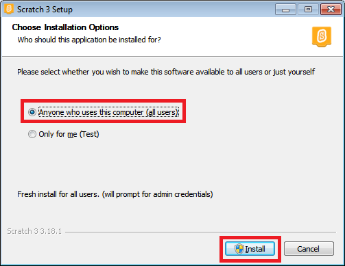
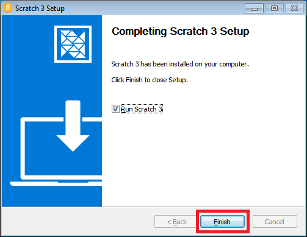
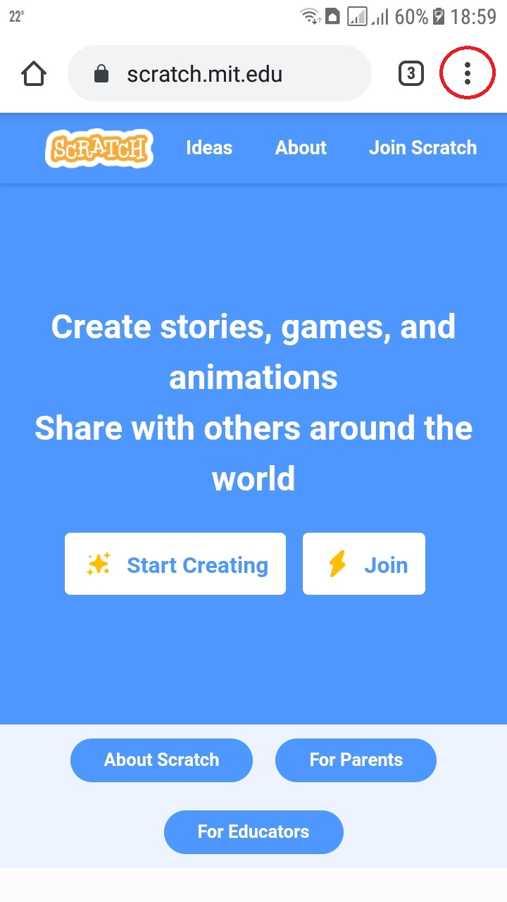
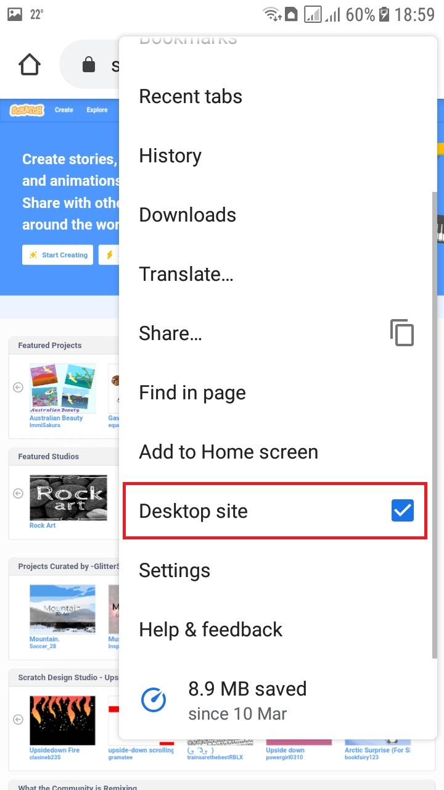
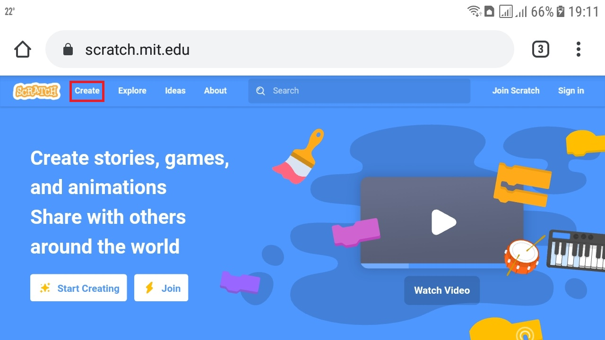
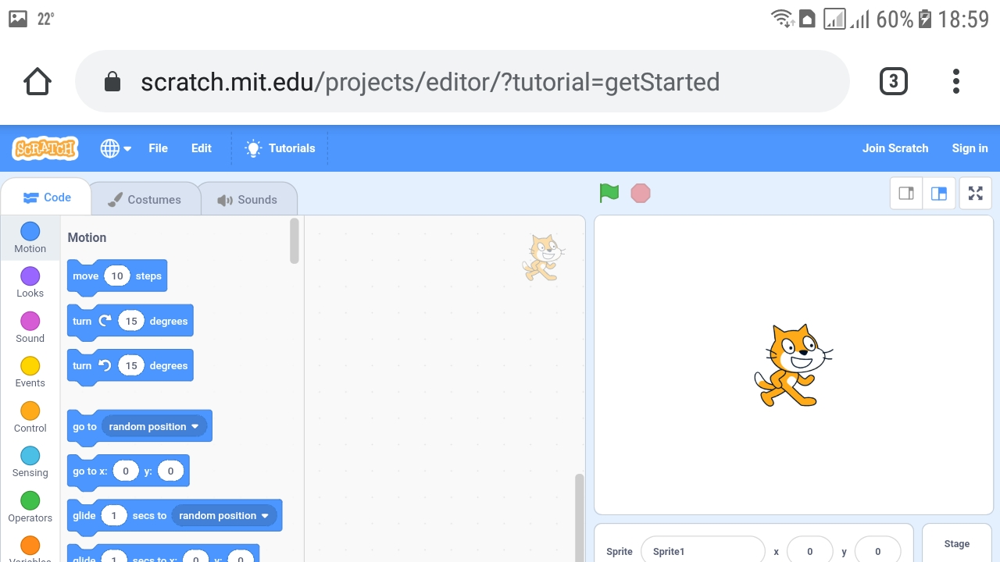
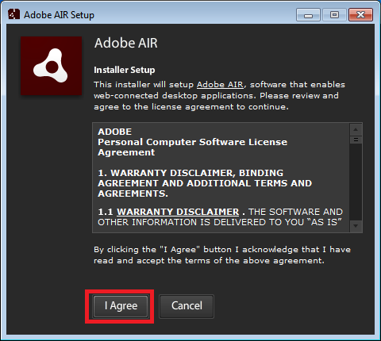
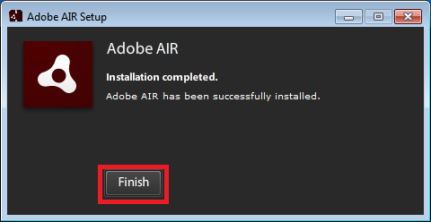
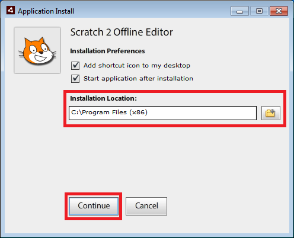

Најновију верзију програма Scratch можете преузети са званичног сајта.
На званичном сајту можете радити и у онлајн верзији програма Scratch.
Упутство у сликама за инсталацију Скреча 3. Прво преузмите програм са званичног сајта (линк изнад).

Install

Упутство у сликама за коришћење Скреча 3 у облаку.

Online



Да би инсталирали Scratch верзију 2 прво је потребно да инсталирате Adobe AIR.
Други корак је инталација програма Scratch 2.
Почетни пројекти
Званично упутство
Скреч картице
Упутство у сликама за инсталацију програма Adobe AIR и Скреча 2. Прво преузмите програме са линка изнад.



Поред уџбеника за учење можете користити и курс на сајту Петље.
ИКТ и Дигитална писменост за пети разред.
Програмирање у Скречу за пети разред.